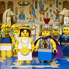

|
|
|
1 Kings 3
|
|
| 3:1
And Solomon made affinity with Pharaoh king of Egypt, and took Pharaoh's
daughter, and brought her into the city of David, until he had made an end
of building his own house, and the house of the LORD, and the wall of
Jerusalem round about. |
Pharaoh's Son-in-Law
|
| 3:2
Only the people sacrificed in high places, because there was no house
built unto the name of the LORD, until those days.
|
| 3:3
And Solomon loved the LORD, walking in the statutes of David his father:
only he sacrificed and burnt incense in high places. |
|
| 3:4
And the king went to Gibeon to sacrifice there; for that was the great
high place: a thousand burnt offerings did Solomon offer upon that altar. |
 (3:4) (3:4)
"A thousand burnt offerings did Solomon offer upon that altar."
Solomon killed and sacrificed 1000 animals to God at Gibeon.
 (3:5) "The LORD appeared to Solomon in a dream by night: and God said,
Ask what I shall give thee." (3:5) "The LORD appeared to Solomon in a dream by night: and God said,
Ask what I shall give thee."
God appeared to Solomon in a dream and offered him whatever he wanted.
Solomon Gets Wise
|
| 3:5
In Gibeon the LORD appeared to Solomon in a dream by night: and God said,
Ask what I shall give thee.
|
| 3:6
And Solomon said, Thou hast shewed unto thy servant David my father great
mercy, according as he walked before thee in truth, and in righteousness,
and in uprightness of heart with thee; and thou hast kept for him this great
kindness, that thou hast given him a son to sit on his throne, as it is this
day.
|
| 3:7
And now, O LORD my God, thou hast made thy servant king instead of David
my father: and I am but a little child: I know not how to go out or come in.
|
| 3:8
And thy servant is in the midst of thy people which thou hast chosen, a
great people, that cannot be numbered nor counted for multitude.
|
| 3:9
Give therefore thy servant an understanding heart to judge thy people,
that I may discern between good and bad: for who is able to judge this thy
so great a people? |
|
| 3:10
And the speech pleased the LORD, that Solomon had asked this thing. |
|
| 3:11
And God said unto him, Because thou hast asked this thing, and hast not
asked for thyself long life; neither hast asked riches for thyself, nor hast
asked the life of thine enemies; but hast asked for thyself understanding to
discern judgment; |
|
| 3:12
Behold, I have done according to thy words: lo, I have given thee a wise and an understanding
heart; so that
there was none like thee before thee, neither after thee
shall any arise like unto thee. |
(3:12-14) God grants Solomon's' request and makes him
the wisest of all men. (He was wiser even than Jesus.) He also promises to make him wealthy and "lengthen his days" if he
will "walk in my ways, ... as thy father David did walk."
 (3:12)
"I have given thee a wise and an understanding heart; so that there was none like thee before thee,
neither after thee shall any arise like unto thee." (3:12)
"I have given thee a wise and an understanding heart; so that there was none like thee before thee,
neither after thee shall any arise like unto thee."
Who was the greatest: Jesus or Solomon?
(3:14) "And if thou wilt walk in my ways, to keep my statutes and my commandments, as thy father David did walk,
then I will lengthen thy days."
Did David sin?
(3:15) "And Solomon awoke; and,
behold, it was a dream."
It was only a dream. None of it every happened. God didn't appear to Solomon and God didn't make him the wisest person on earth.
It was just a silly dream like we all have now and then.
Two Prostitutes, One Baby
|
| 3:13
And I have also given thee that which thou hast not asked, both riches,
and honour: so that there shall not be any among the kings like unto thee
all thy days.
|
| 3:14
And if thou wilt walk
in my ways, to keep my statutes and my commandments, as thy father David did
walk, then I will lengthen thy days.
|
| 3:15
And Solomon awoke; and,
behold, it was a dream. And he came to Jerusalem, and stood before the
ark of the covenant of the LORD, and offered up burnt offerings, and offered
peace offerings, and made a feast to all his servants.
|
| 3:16
Then came there two women, that were harlots, unto the king, and stood
before him.
|
| 3:17
And the one woman said, O my lord, I and this woman dwell in one house;
and I was delivered of a child with her in the house.
|
| 3:18
And it came to pass the third day after that I was delivered, that this
woman was delivered also: and we were together; there was no stranger with
us in the house, save we two in the house.
|
| 3:19
And this woman's child died in the night; because she overlaid it.
|
| 3:20
And she arose at midnight, and took my son from beside me, while thine
handmaid slept, and laid it in her bosom, and laid her dead child in my
bosom.
|
| 3:21
And when I rose in the morning to give my child suck, behold, it was dead:
but when I had considered it in the morning, behold, it was not my son,
which I did bear. |
|
| 3:22
And the other woman said, Nay; but the living is my son, and the dead is
thy son. And this said, No; but the dead is thy son, and the living is my
son. Thus they spake before the king. |
|
| 3:23
Then said the king, The one saith, This is my son that liveth, and thy son
is the dead: and the other saith, Nay; but thy son is the dead, and my son
is the living. |
|
| 3:24
And the king said, Bring me a sword. And they brought a sword before the
king. |
|
| 3:25
And the king said, Divide the living child in two, and give half to the
one, and half to the other. |
|
| 3:26
Then spake the woman whose the living child was unto the king, for her
bowels yearned upon her son, and she said, O my lord, give her the living
child, and in no wise slay it. But the other said, Let it be neither mine
nor thine, but divide it. |
|
| 3:27
Then the king answered and said, Give her the living child, and in no wise
slay it: she is the mother thereof. |
|
| 3:28
And all Israel heard of the judgment which the king had judged; and they
feared the king: for they saw that the wisdom of God was in him, to do
judgment.
|
|
|